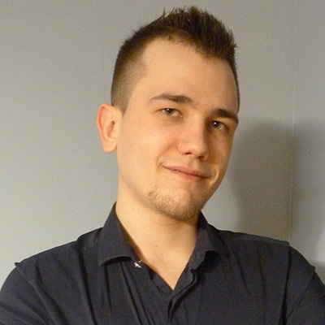
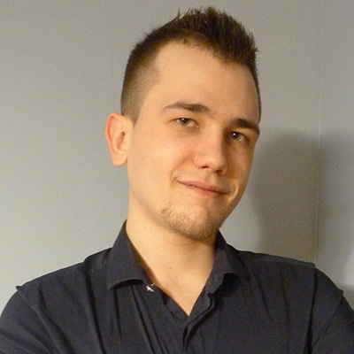

Patryk Waliczek
Video producer
Graphic designer
Web designer
Patryk Waliczek, born and raised in Poland, currently settled in the beautiful city of Copenhagen, Denmark; doing his studies at KEA for Multimedia Design and Communication AP degree.
Althouhg, at the present moment, he is working as a part-time employee in a local restaurant; his passion for video producing and interest in various areas like a graphic designing or web designing, drives him to the undertaking of a job in this field.
At the young age of 21, he is facinated by traveling to experience different cultures and endeavors in the making of videos from his journeys, as well as working remotely as a creative producer.
If you need to reach him, don’t hesitate to do so via social media or email, found in the contact box on the right.